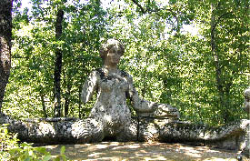
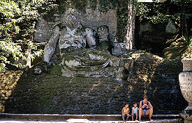
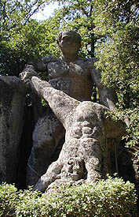

PARCO DEI
MOSTRI/BOMARZO
怪獣庭園/ボマルツォ
ローマの北にある辺鄙な村、ボマルツォ。
その村外れに16世紀につくられた幻想庭園がある。
澁澤龍彦でお馴染みボマルツォの怪獣庭園である。
「聖なる森」ともよばれるその森の中には様々な怪獣や得体の知れない彫像が点在している。
ヴィエンチャンのルアン
プーの庭園や日本にも見られる様々なコンクリ仏庭園などは直接間接問わずこの庭園にインスパイアされている部分が大きいのではないだろうか。

ボマルツォの村は時間が止まってしまったかのような山の上の城壁都市である。
その山を下るとここの庭園はある。
おどろおどろしいところを想像しがちだが家族連れがピクニックをしていたり、結構のんびりとしたところである。
菓子と飲物と異様に充実した土産物がある売店やトイレがあり、ちゃんとした観光地になっている。
ただし交通の便は悪いのだが。
売店を過ぎしばらく広場を歩いていくとゲートが現れる。いよいよ怪獣庭園のはじまりだ。
さして深くもない森だが散歩するには気持ちが良い。
ただし凄く暑い事を除けば。
女性の下半身が動物になっちゃっているパターンの怪物が多い。
これはこの庭園をつくったオルシニ候の個人的な趣味なのだろうか？


以上、下半身が獣、蛇、龍、ベンチになってしまった方々。
三首の犬
エッグスタンドに松ぼっくりが乗ってます。
 女性型寝椅子。痛くて寝られないっつーの。
女性型寝椅子。痛くて寝られないっつーの。
そんなこんなでこの庭園の心臓部に着く。
大物が目白押しだ。

澁澤の本でお馴染みの地獄の口である。
ディス イズ
ヨーロッパって感じですかねえ。

内部は小部屋になっており、中から外を見るとNHK
BSのドーモ君みたいである。

絵に書いたような西洋のドラゴン。何をモチーフにしてこのような怪獣を発想したのだろうか？
目がイッちゃってます。

次に現れるのは象さん。
ただし背中に建物を背負って人を巻いている恐ろしい象さんだ。

像さんがいる広場の中央には池がある。その池の向うにはこんなお方が。

傾いた家。最初から傾かせたのか後から傾いたのかは不明。
どちらにしても中から外を眺めると平衡感覚が失われフラフラしてくる。

巨石の上に石積の櫓が組まれている。で、巨石の下にも石が組まれて小部屋がつくられている。
どーやって造ったのだろうか？
→表情にズームイン。イタそ〜→
恐怖の股裂き。これは7〜８メートル位あったろうか。大迫力のシーンである。


その他動物園顔負けの変な石像を見て回ること1時間以上。ようやくもとのゲートに戻る。

で、ゲートの奥にある壷を乗せたイモリを見て怪獣庭園巡りは終了。
ゲテモノも500年経てば立派な史跡になるということがわかった。
頑張れルアン プー、あと四百ン十年だぞ。
いよいよメインディッシュです
珍寺大道場in伊太利
珍寺大道場 HOME